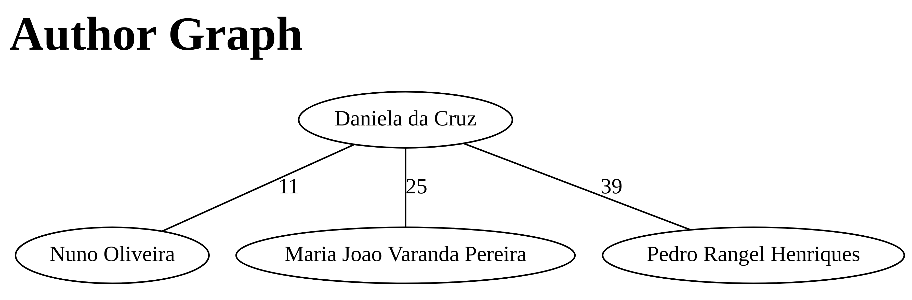
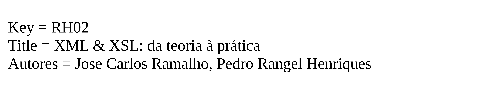
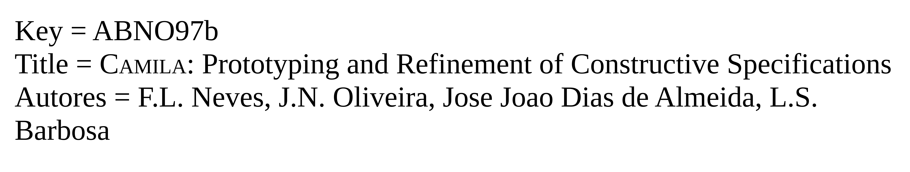
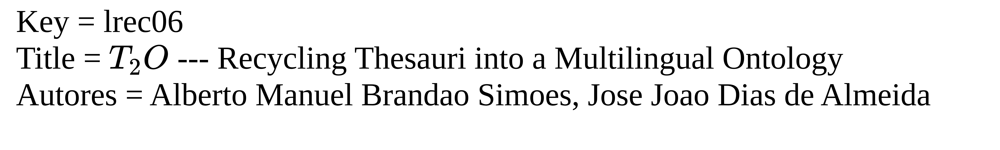
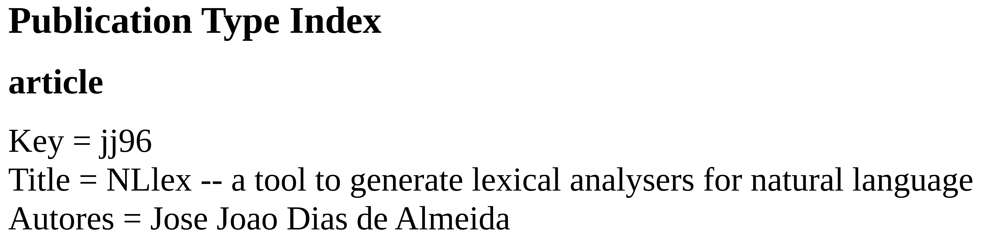
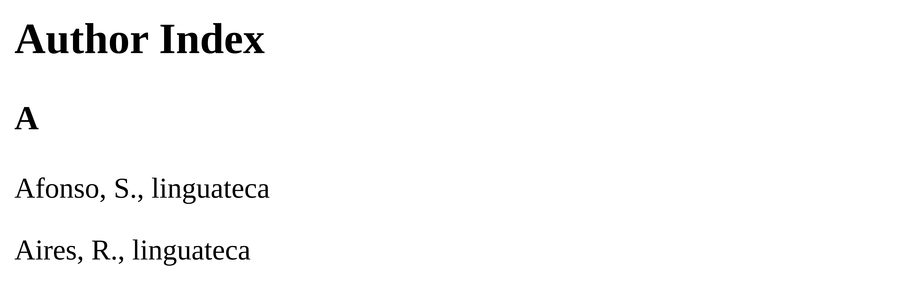

BibTeXPro, Um processador de BibTeX
Instituição: Universidade do Minho
Cadeira: Processamento de Linguagens e Compiladores (2021/2022)
Identificação: plc21TP1gr03
- Equipa
- Alef Keuffer (A91383)
- Ivo Lima (A90214)
- Catarina Quintas (A91650)
O formato \(Bib\TeX\)
\(Bib\TeX\) é a ferramenta e formato de ficheiro usado para descrever e processar listas de referências, principalmente em conjunção com \(La\TeX\).
Entrada \(Bib\TeX\)
Uma entrada \(Bib\TeX\) consiste em um tipo de entrada, uma chave de citação e um número de campos que definem várias caraterísticas de uma entrada específica.1.
Existem 17 tipos de entrada, sendo 14 categorias de referência e 3 de uso específico em \(Bib\TeX\).
As entradas não são case sensitive2.
A documentação diz que ficheiros \(Bib\TeX\) podem conter 4 tipos de entrada: @string, @preamble, @comment e 14 categorias (e.g. @article, @book, etc)3.
Note que:
@string- define abreviações que podem se usadas depois em um campo.
@preamble- define como um texto especial deve ser formatado.
@comment- para comentários que não devem ser levados em conta pelo \(Bib\TeX\).
Estas três não seram processadas pelo nosso programa.
Especificação da Solução
A nossa solução deve satisfazer os seguintes requisitos:
- (R1)
- Fazer a contagem das categorias presentes no documento, tais como: phDThesis, Misc, InProceeding, etc.
- (R2)
- Produzir um documento em formato HTML com (R2.1) o nome das categorias encontradas e (R2.2) respectivas contagens.
- (R3)
- Filtrar, para cada entrada de cada categoria, a respetiva (R3.1) chave, (R3.2) autores e (R3.3) título. (R3.4) O resultado final deverá ser incluído no documento HTML gerado em (R2).
- (R4)
- Criar um índice de autores, que mapeie cada autor nos respectivos registos, de modo a que posteriormente uma ferramenta de procura do Linux possa fazer a pesquisa.
- (R5)
- Construir um Grafo que mostre, para um dado autor (definido à partida) todos os autores que publicam normalmente com o autor em causa.
- (R6)
- Recorrendo à linguagem Dot do GraphViz, gerar um ficheiro com o grafo de (R5) de modo a que possa, posteriormente, usar uma das ferramentas que processam Dot para desenhar o dito grafo de associações de autores.
Execução do programa
Para realizar as modificações no ficheiro usamos solve(author_name,INPUT_FILENAME=BIB_EXAMPLE_FILENAME), passando como argumento o nome do autor que queremos conforme (R5).
Módulo não é re
Usamos o módulo regex que é um superset de re mais poderoso. Seu uso será justificado.
import regex as re
Algumas constantes
Aqui incluimos MathJax, uma biblioteca em javascript, para renderizar fórmulas matemáticas nos navegadores.
MATHJAX = '''
<script type="text/x-mathjax-config">
MathJax.Hub.Config({
"extensions":["tex2jax.js"],
"jax":["input/TeX",
"output/HTML-CSS"],
"messageStyle":"none",
"tex2jax":{
"processEnvironments":false,
"processEscapes":true,
"inlineMath":[["$","$"]],
"displayMath":[]
},
"TeX":{
"extensions":["AMSmath.js",
"AMSsymbols.js",
"noErrors.js",
"noUndefined.js"]
},
"HTML-CSS":{
"availableFonts":["TeX"]
}
});
</script>
<script type="text/javascript" async
src="https://cdnjs.cloudflare.com/ajax/libs/mathjax/2.7.5/MathJax.js">
</script>
'''
O início do nosso HTML é
HTML_PROLOGUE = f'''<!DOCTYPE html>
<HTML lang="en">
<HEAD>
<meta charset="utf-8">
<TITLE>Categories in BibTeX</TITLE>
{MATHJAX}
</HEAD>'''
Vamos ter que fechar a tag HTML que começamos em HTML_PROLOGUE:
HTML_EPILOGUE = '</HTML>'
O ficheiro dado como argumento de entrada é o ficheiro exemplo-utf8.bib.
BIB_EXAMPLE_FILENAME = "exemplo-utf8.bib"
Decidimos nomear o output output.html.
OUTPUT_FILENAME = 'output.html'
Função principal
Em solve() temos a váriavel html_str_ls que consiste numa lista de strings que serão concatenadas. A título de optimização da imutabilidade de strings (concatenação de strings em python cria uma cópia de cada), optamos por fazer sucessivos appends de custo \(\cal{O}(1)\) e por fim, concatena-las para formar o código HTML.
Em bib_str guardamos todo o texto contido em INPUT_FILENAME.
def solve(author_name,INPUT_FILENAME=BIB_EXAMPLE_FILENAME):
html_str_ls = [HTML_PROLOGUE]
bib_str = get_bib_str(INPUT_FILENAME)
entries = get_entries(bib_str)
format_authors(entries)
fix_repeated_authors(entries)
html_str_ls.append(
html_enclose('body',
get_html_pub_type_counts(entries)
+ get_html_common_pub_author(author_name,entries)
+ get_html_pub_type_index(entries)
+ get_html_author_index(entries)))
html_str_ls.append(HTML_EPILOGUE)
with open(OUTPUT_FILENAME,'w') as file:
file.write('\n'.join(html_str_ls))
get_bib_str() é utilizada para abrir e extrair o conteúdo do ficheiro.
def get_bib_str(filename):
with open(filename,'r') as file:
return file.read()
Recolhendo as entradas
Neste procedimento, criamos um dicionário onde cada chave é um par (categoria de publicação, nome do autor) e o valor é um dicionário em que cada chave é um campo da entrada \(Bib\TeX\) e o valor é o valor do campo.
def get_entries(string):
d = {}
Poderíamos coletar todos os campos de todas as entradas, mas neste trabalho só são relevantes alguns campos. Então, para economizar espaço no dicionário, definimos:
RELEVANT_FIELDS = {'author','title'}
Como foi dito anteriormente, alguns tipos de entrada não são categorias de referência, assim iremos ignorá-los.
SPECIAL_TYPES = {'comment','string','preamble'}
É aqui que se justifica o uso do módulo regex. Note a expressão regular:
between_cbrace_ex = r'(?:(?<rec>{(?:[^{}]+|(?P>rec))*+}))'
Nela usamos um padrão recursivo não suportado pelo módulo re. O padrão é usado para capturar o que está entre chavetas, que podem estar aninhadas arbitrariamente.
field_match = re.compile(
rf"(?<name>\w+)\s*=\s*("
rf"(?<value>{between_cbrace_ex})"
rf'|"(?<value>[^"]+)"'
rf"|(?<value>\d+))"
)
entry_match = re.compile(rf'@(?<type>\w+)(?<value>{between_cbrace_ex})')
key_match = re.compile(r'([^{},~#%\\]+),')
for entry in entry_match.finditer(string):
entry_type = entry['type'].lower()
if entry_type not in SPECIAL_TYPES:
key = key_match.search(entry['value'])[1]
d[entry_type, key] = {
field['name'].lower(): field['value']
for field in field_match.finditer(entry['value'])
if field['name'].lower() in RELEVANT_FIELDS
}
return d
Procedimentos usados ao longo do programa
Relacionados a expressões \(La\TeX\)
Chavetas
Assumimos que as chavetas estão balanceadas.
Chavetas dentro de títulos são usadas para prevenir que palavras sejam convertidas em letras minúsculas (se “sentence style” é usado ao invés de “title style”)1.
Por exemplo, devemos usar chavetas para escrever
title = "The Life of {Albert} {Einstein}"
ou, de forma equivalente,
title = {The life of {Albert} {Einstein}}
se quisermos garantir que as letras ‘A’ e ‘E’ sejam sempre formatadas em letras maiúsculas mesmo que “sentence style” esteja sendo usado.
Suspeitamos que talvez pudessemos usar:
r'[^\\]\$.*[^\\]\$'para identificar que não estamos dando escape no dollar sign. Mas já tinhamos esse procedimento feito e decidimos por não alterá-lo.
https://tex.stackexchange.com/questions/109064/is-there-a-difference-between-and-in-bibtex:↩︎
def unbrace(expression):
string_ls = []
is_between_dollar_sign = False
is_previous_backslash = False
for c in expression:
if c == '$' and not is_previous_backslash:
if is_between_dollar_sign:
is_between_dollar_sign = False
else:
is_between_dollar_sign = True
if c == '\\':
is_previous_backslash = True
else:
is_previous_backslash = False
if c in '{}' and not is_between_dollar_sign:
continue
string_ls.append(c)
return ''.join(string_ls)
Relacionados a HTML
É muito comum em HTML o uso de tags para marcar uma expressão. Então, criamos um procedimento que facilita cercar uma expressão pela tag desejada.
def html_enclose(tag,string):
return rf'<{tag.upper()}>{string}</{tag.upper()}>'
Nesse sentido, spans são muito úteis em HTML, logo criamos:
def html_create_span(expression):
return html_enclose('span',expression)
Às vezes queremos adicionar um atributo numa tag, nesse caso podemos usar (há um pequeno problema com esse procedimento, mas para nosso uso não foi relevante):
def html_add_attr(attr, val, html_expression):
return re.sub(
r"<(\w+)([^>]*)\s*>(.*)</\1>",
rf'<\1\2 {attr.upper()}="{val}">\3</\1>',
html_expression,
)
Relacionados a Regex
Em certas ocasiões, desejamos fazer várias substituições seguidas numa string, logo criamos:
def mult_replace(string, replacement_list):
for old, new in replacement_list:
string = re.sub(old, new, string)
return string
Tratamento do nome dos autores
Escolhemos remover acentuações e caráteres especiais que as representam em \(La\TeX\) (e.g. \~) do nome dos autores.
É importante notar que ainda ocorrem alguns problemas de acentuações uma vez que não removemos acentuações do tipo \~{}.
def format_authors(data):
for d in data.values():
if "author" in d:
author_lst = [ remove_consecutive_spaces(
str.strip(
invert_name(
unbrace(
remove_accents(name)))))
for name in re.split(r"\band\b",
d["author"].replace("\n", " "))]
d['author'] = [author for author in author_lst if author]
Procedimentos auxiliares
def remove_consecutive_spaces(name):
return re.sub(r'\s+',' ',name)
Inversão das componentes do nome
Para inverter nomes do tipo: last_name, first_name. Por exemplo: “da Cruz, Daniela” → “Daniela da Cruz”
def invert_name(author_name):
return re.sub(r"([^,]+),\s*([^,]+)", r"\2 \1", author_name)
Remoção de acentuações
Relevante nesse sentido é o script achado em LaTex-handler ou tabelas encontradas aqui.
def remove_accents(name):
return remove_latex_accent(remove_normal_accent(name))
Para remoção de acentos \(La\TeX\) consultamos a wiki.
Pensamos em possivelmente usar algo como (1 a 2 pelo caso \t{oo}, SYMBOL é um caráter relevante):
re.sub(r'(?(?={)(SYMBOL){(\w{1,2})}|(\w))',
lambda m: fix_accent(m[1],m[2]),
author_name)para manter acentuações, mas devido a restrições de tempo não achamos prudente embarcar nesta ideia.
def remove_latex_accent(name):
return re.sub(r'\\\W(?:{(.*)})?',
'\1',
name)
Aqui removemos palavras com acentuações normais, isto é, palavras como “á”, “é”, “í”, etc (não \(La\TeX\)).
def remove_normal_accent(name):
import unicodedata
return "".join(
(
c
for c in unicodedata.normalize("NFD", name)
if unicodedata.category(c) != "Mn"
)
)
Também usamos a já referenciada unbrace().
Tratando autores repetidos na estrutura
No dicionário, teremos autores repetidos (pois podem estar escritos de formas diferentes, omitindo alguns sobrenomes ou até mesmo primeiros nomes).
Por exemplo, ‘M. J. Varanda’, ‘M. Joao Varanda’, ‘Maria Joao Varanda’ e ‘Maria Joao V. Pereira’ são diferentes maneiras de se referir a mesma pessoa.
def fix_repeated_authors(data):
author_blocks = fix_block_func(
block_authors_with_two_common_names_v2(
get_author_list(data)))
author_dict = {author_name:max(s,key=len)
for s in author_blocks
for author_name in s}
for d in data.values():
d['author'] = [author_dict[author]
for author in d['author']]
Para lidar com isso, realizamos três procedimentos:
- Obtemos uma lista dos autores ordenada alfabeticamente.
- Criamos conjuntos onde os seus elementos representam um mesmo autor. Ou seja, se temos três nomes: \(A\), \(B\) e \(C\) e temos os conjuntos \(\{A,B\}\) e \(\{B,C\}\), então os nomes \(A,B,C\) referem-se ao mesmo autor.
- Juntamos esses blocos para que cada bloco seja um único autor. Ou seja, determinamos uma “transitividade” nos blocos, usando o exemplo anterior, se temos \(\{A,B\}\) e \(\{B,C\}\), devemos obter \(\{A,B,C\}\).
Procedimento 1
def get_author_list(data):
return sorted(set([a
for s in data.values()
for a in s.get("author", [])]))
Procedimento 2
def block_authors_with_two_common_names_v2(authors):
res = set()
for author in authors:
fs = set()
for author2 in authors:
a1 = set(re.findall(r'\w\w+',author))
a2 = set(re.findall(r'\w\w+',author2))
Se os autores tem mais de duas componentes do nome em comum, então podemos considera-los o mesmo autor.
if len(a1.intersection(a2)) > 1:
fs.add(author2)
Para lidar com a situação descrita abaixo, assumimos que a primeira componente de um nome nunca será omitida.
Caso especial: Suponha que existe um autor que só tem uma componente do nome não abreviada (e.g. P. Henriques). Suponha que outro autor (e.g. P.R. Henriques) também só tem uma componente do nome não abreviada e essa componente é igual a do primeiro autor. Então ainda temos que fortalecer a condição para que sejam considerados iguais. Para isso, usamos is_a_first_last_match() garantindo que pelo menos a abreviação da primeira componente dos nomes sejam iguais.
elif (
len(a1) == 1
and len(a1.intersection(a2)) == 1
and is_a_first_last_match(author, author2)
):
fs.add(author2)
res.add(frozenset(fs))
return res
Pra implementar is_a_first_last_match() usamos get_crude_abbrev() para obter uma string com o primeiro caráter de cada componente do nome de um autor (e.g. “Ricardo Henriques → RH”).
def get_crude_abbrev(name):
return ''.join(c for c in name if c.isupper())
Aqui iremos verificar se os primeiros caráteres da primeira e última componente do nome de um autor \(a_1\) são iguais, respetivamente, aos primeiros e últimos caráteres da primeira e última componente do nome de um autor \(a_2\).
def is_a_first_last_match(author1,author2):
a1 = get_crude_abbrev(author1)
a2 = get_crude_abbrev(author2)
return a1[0] == a2[0] and a1[-1] == a2[-1]
Procedimento 3
Objetivo: Criar a “transitividade” nos blocos dos autores referenciada no ínicio.
def fix_block_func(data):
res = set()
for q in data:
for s2 in data:
if q.intersection(s2) != set():
q = q.union(s2)
res.add(frozenset(q))
return res
Contagem dos tipos de publicações
Conforme (R1), devemos contar quantas publicações de cada tipo existem.
def get_pub_type_counts(data):
pub_types_occur = [x[0] for x in data.keys()]
pub_types = set(pub_types_occur)
return [(pub_type, pub_types_occur.count(pub_type)) for pub_type in pub_types]
Conforme (R2) queremos incorporar a contagem de publicações de cada tipo no documento HTML que iremos produzir.
def get_html_pub_type_counts(data):
string_ls = [
html_enclose(
"h2",
"Number of Occurrences of Publication Types",
)
]
pub_counts = sorted(
get_pub_type_counts(data),
key=lambda x: x[1],
reverse=True,
)
time = lambda v: "s" if v > 1 else ""
for pub_type, count in pub_counts:
string_ls.append(
html_enclose(
"p",
f"Type {pub_type} appears {count} time{time(count)}",
)
)
return "\n".join(string_ls)
Solução inicial
A estratégia para satisfazer (R1) consistiu em ler o arquivo linha a linha verificando se a categoria encontrada já aparecia no dicionário, se já existir, irá ser incrementado o número de ocorrências, senão será adicionado como primeira ocorrência, para que depois possa ser produzido um ficheiro HTML com todas as categorias e o devido número de ocorrências.
De seguida apresentamos a Expressão Regular utilizada para filtrar a informação pedida em (R1).
Uma vez que todas as categorias num \(Bib\TeX\) têm como antecedente o caráter @ e terminam numa {, tornou-se fácil criar um filtro que guarde toda a informação delimitada entre esses dois parâmetros.
Através dessa pequena realização chegamos à seguinte expressão: r'^@(.*){'
import re
file = open("exemplo-utf8.bib", "r")
read = True
dic = {}
string_ls = ['<!DOCTYPE HTML PUBLIC>\n<HTML>\n <HEAD>\n '\
'<TITLE>Categories in BibTeX</TITLE>\n </HEAD>\n <BODY>']
while read:
linhaFicheiro = file.readline()
ncat = re.match(r'^@(.*){',linhaFicheiro)
if ncat != None:
cat_title = ncat.group(1).title()
dic[cat_title] = dic.get(cat_title,0) + 1
if not linhaFicheiro:
read = False
file.close()
time = lambda v: 's' if v > 1 else ''
for k, v in dic.items():
string_ls.append(f' <P>The category {k} appears {v} time{time(v)}.</P>')
string_ls.append(f' </BODY>\n</HTML>')
with open('output.html','w') as file:
file.write('\n'.join(string_ls))Infelizmente a estratégia adotada na primeira questão de unicamente guardar aquilo que interessava tornou-se impraticável pois não era escalável para a extração e manipulação necessária dos restantes parâmetros pedidos nas outras questões.
Criação do grafo
Conforme (R5) queremos construir um grafo que represente a co-autoria entre os autores.
def get_author_pub_graph(author,data):
pub_partners = []
for entry in data.values():
if 'author' in entry and author in entry['author']:
for partner in entry['author']:
if partner != author:
pub_partners.append(partner)
return [(author_name,pub_partners.count(author_name))
for author_name in set(pub_partners)]
Conforme (R6) iremos recorrer a linguagem Dot para renderizar o grafo.
def get_dot_graph(author,data):
import textwrap
g = sorted(get_author_pub_graph(author,data),key = lambda x: x[1])
string_ls = ['graph{']
string_ls2 = []
for partner_author,no_joint_pub in g[-3:]:
string_ls2.append(f'"{author}" -- "{partner_author}" [label="{no_joint_pub}"]')
string_ls.append(textwrap.indent('\n'.join(string_ls2),' '))
string_ls.append('}')
return '\n'.join(string_ls)
Como ideia nossa para ir além do que foi pedido, decidimos incorporar o grafo no documento HTML que iremos produzir.
Utilizamos re.search() porque o arquivo gerado contém um preâmbulo XML como doctype. Só queremos o SVG.
def get_html_dot_svg(author,data):
import os
DOT_INPUT_FILENAME = 'dot_input'
with open(DOT_INPUT_FILENAME,'w') as file:
file.write(get_dot_graph(author,data))
os.system(f'dot -T svg -O {DOT_INPUT_FILENAME}')
with open(DOT_INPUT_FILENAME + '.svg','r') as file:
return re.search(r'<svg(?:.|\n)+</svg>',file.read()).group()
Finalmente,
def get_html_common_pub_author(author,data):
string_ls = [html_enclose('h2','Author Graph')]
string_ls.append(get_html_dot_svg(author,data))
return ''.join(string_ls)
que é responsável por gerar:

na página HTML.
Filtrar (chave,autore,título)
Títulos
Pelo (R3.3), devemos incluir títulos. Para isso devemos aplicar um tratamento para uma formatação mais elegante (como manter expressões \(La\TeX\)).
Note que formatamos small caps como pode ser notado em entradas que contém “Camila”. Também formatamos sans serif e algumas expressões matemáticas.
def fix_title(title):
substitutions = [(r'\\textsc{((?:\\{|[^{])+)}',
lambda m: f'{html_to_small_caps(html_create_span(m.group(1)))}'),
(r'\\textsf{((?:\\{|[^{])+)}',
lambda m: f'{html_to_sans_serif(html_create_span(m.group(1)))}'),
(r'(\$(?:.|\\\$)+\$)',
lambda m: f'{str_to_html_math(m.group(1))}')]
replace = lambda x: mult_replace(x,substitutions)
return html_create_span(
single_quote_latex(
double_quote_latex(
unbrace(
replace(
remove_latex_accent(
unscape_latex(
' '.join(s.strip() for s in title.split('\n')))))))))
Tratamento de caráteres \(La\TeX\)
Aspas
def double_quote_latex(expression):
return re.sub(r"``(.*[^\\])''",r'"\1"',expression)
def single_quote_latex (expression):
return re.sub(r"[^`]`([^`].*[^'])'[^`]",r"'\1'",expression)
Escaped characters
Alguns caráteres que pode aparecer em títulos e que temos a capacidade de tratar.
def unscape_latex(latex_expression):
return re.sub(r'\\([&%$#_{}\\])',r'\1',latex_expression)
Veja como fica a entrada
@Book{RH02,
author= {José Carlos Ramalho and Pedro Rangel Henriques},
title = {XML \& XSL: da teoria à prática},
.
.
.em HTML:

Formatações especiais
Small caps
Usado para converter expressoes latex \textsc{expression}
def html_to_small_caps(html_expression):
return html_add_attr('style','font-variant:small-caps',html_expression)
def str_to_html_small_caps(expression):
return html_to_small_caps(html_create_span(expression))
Veja como fica a entrada
@techreport{Barbosa95,
author = "L.S. Barbosa and J.J. Almeida",
title = "System Prototyping in \textsc{Camila}",
.
.
.em HTML:

Sans serif
def html_to_sans_serif(html_expression):
return html_add_attr('style','font-family:sans-serif',html_expression)
Este caso (\textsf) não ocorre no exemplo mas achamos interessante adiciona-lo.
Matemática
def str_to_html_math(string):
return html_add_attr('class','math inline',html_create_span(string))
Observe como fica a entrada
@InProceedings{lrec06,
author = {José João Almeida and Alberto Simões},
title = {{$T_2O$} --- Recycling Thesauri into a Multilingual Ontology},
.
.
.em HTML:

Incorporar no documento HTML
Como fica renderizado:

Conforme (R3.4):
def get_html_pub_type_index(data):
string_ls = [html_enclose('h2','Publication Type Index')]
for entry_type in sorted(set(x[0] for x in data)):
string_ls.append(html_enclose('h3',entry_type))
for citation_key in [x[1] for x in data if x[0]==entry_type]:
title = data[entry_type,citation_key].get('title','')
authors = ', '.join((sorted(data[entry_type,citation_key].get('author',''))))
string_ls.append(
html_enclose('p',
f"Key = {citation_key}"
f"\n<br>Title = {fix_title(title)}"
f"\n<br>Autores = {authors}"
)
)
return '\n'.join(string_ls)
Correspondendo qundo visto em HTML:

Índice de autores
Conforme (R4) iremos criar um índice de autores.
Geralmente, nos índices de autores, o apelido aparece primeiro seguido pelas iniciais dos outros nomes. Com esse propósito, criamos o procedimento que recebe um nome normalizado (e.g. Pedro Filipe H. Pereira), retornando-o “invertido” e abreviado (e.g. Pereira, P. F. H.).
def last_name_first(name):
initials = '. '.join(get_crude_abbrev(name))[:-2]
last_name = name.split()[-1]
return f'{last_name}, {initials}'
Utilizamos last_name_first() na construção de um dicionário que irá conter como chaves o nome do autor já formatado e como valor todas as chaves de citações de suas publicações.
def get_author_index_dict(data):
index = {}
for key, e in data.items():
if 'author' in e:
for author in e['author']:
author_name = last_name_first(author)
if author_name not in index:
index[author_name] = set()
index[author_name].add(key[1])
return index
Decidimos incorporar o índice no documento HTML que iremos produzir.
def get_html_author_index(data):
index = sorted(get_author_index_dict(data).items())
alphabet_order = sorted(set(c[0][0] for c in index))
string_ls = [html_enclose('h2','Author Index')]
i = 0
string_ls.append(html_enclose('h3',alphabet_order[i]))
for author,citation_keys in index:
if author[0] != alphabet_order[i]:
i += 1
string_ls.append(html_enclose('h3',alphabet_order[i]))
citation_keys_str = ', '.join(citation_keys)
string_ls.append(html_enclose('p',f'{author}, {citation_keys_str}'))
return '\n'.join(string_ls)
Parte do HTML gerado:

Execução pela linha de comandos
Este bloco é utilizado para executar o programa pela linha de comandos.
if __name__ == '__main__':
import sys
import os.path
Para facilitar a realização de testes deixamos o valor standard do filename para o ficheiro exemplo.
filename = sys.argv[1] if len(sys.argv) > 1 else BIB_EXAMPLE_FILENAME
assert os.path.isfile(filename)
Novamente, para facilitar a realização de testes (executar sem passar o argumento com o nome do autor) escolhemos a autora Daniela da Cruz que está presente no ficheiro exemplo-utf8.bib com o intuito de gerar o grafo conforme (R5).
if len(sys.argv) < 3:
author_name = 'Daniela da Cruz'
else:
author_name = sys.argv[2]
solve(author_name,filename)
Conclusão
Através deste projeto foi possível expandir as nossas competências intelectuais sobre o tópico de estudo: Expressões Regulares (ER) que nos possibilitou desenvolver um processador \(Bib\TeX\) utilizando a linguagem Pyhton para extrair informações relavantes. Além disso, aumentamos a nossa familiaridade com HTML pois dispusemos as informações coletadas numa página web, onde inserimos um grafo gerado usando a linguagem Dot.
Consideramos que o produto final cumpre os requisitos.
Este projeto foi desafiante (pela complexidade do \(La\TeX\)) e enriquecedor (pela variedade de linguagens usadas) para cada um de nós, uma vez que tivemos a oportunidade de expandir, aprofundar e aperfeiçoar os nossos conhecimentos.
Pontos que podemos melhorar
- estruturação do programa
Apêndices
Source Code
#!/usr/bin/python
import regex as re
MATHJAX = '''
<script type="text/x-mathjax-config">
MathJax.Hub.Config({
"extensions":["tex2jax.js"],
"jax":["input/TeX",
"output/HTML-CSS"],
"messageStyle":"none",
"tex2jax":{
"processEnvironments":false,
"processEscapes":true,
"inlineMath":[["$","$"]],
"displayMath":[]
},
"TeX":{
"extensions":["AMSmath.js",
"AMSsymbols.js",
"noErrors.js",
"noUndefined.js"]
},
"HTML-CSS":{
"availableFonts":["TeX"]
}
});
</script>
<script type="text/javascript" async
src="https://cdnjs.cloudflare.com/ajax/libs/mathjax/2.7.5/MathJax.js">
</script>
'''
HTML_PROLOGUE = f'''<!DOCTYPE html>
<HTML lang="en">
<HEAD>
<meta charset="utf-8">
<TITLE>Categories in BibTeX</TITLE>
{MATHJAX}
</HEAD>'''
HTML_EPILOGUE = '</HTML>'
BIB_EXAMPLE_FILENAME = "exemplo-utf8.bib"
OUTPUT_FILENAME = 'output.html'
def solve(author_name,INPUT_FILENAME=BIB_EXAMPLE_FILENAME):
html_str_ls = [HTML_PROLOGUE]
bib_str = get_bib_str(INPUT_FILENAME)
entries = get_entries(bib_str)
format_authors(entries)
fix_repeated_authors(entries)
html_str_ls.append(
html_enclose('body',
get_html_pub_type_counts(entries)
+ get_html_common_pub_author(author_name,entries)
+ get_html_pub_type_index(entries)
+ get_html_author_index(entries)))
html_str_ls.append(HTML_EPILOGUE)
with open(OUTPUT_FILENAME,'w') as file:
file.write('\n'.join(html_str_ls))
def get_bib_str(filename):
with open(filename,'r') as file:
return file.read()
def get_entries(string):
d = {}
RELEVANT_FIELDS = {'author','title'}
SPECIAL_TYPES = {'comment','string','preamble'}
between_cbrace_ex = r'(?:(?<rec>{(?:[^{}]+|(?P>rec))*+}))'
field_match = re.compile(
rf"(?<name>\w+)\s*=\s*("
rf"(?<value>{between_cbrace_ex})"
rf'|"(?<value>[^"]+)"'
rf"|(?<value>\d+))"
)
entry_match = re.compile(rf'@(?<type>\w+)(?<value>{between_cbrace_ex})')
key_match = re.compile(r'([^{},~#%\\]+),')
for entry in entry_match.finditer(string):
entry_type = entry['type'].lower()
if entry_type not in SPECIAL_TYPES:
key = key_match.search(entry['value'])[1]
d[entry_type, key] = {
field['name'].lower(): field['value']
for field in field_match.finditer(entry['value'])
if field['name'].lower() in RELEVANT_FIELDS
}
return d
def unbrace(expression):
string_ls = []
is_between_dollar_sign = False
is_previous_backslash = False
for c in expression:
if c == '$' and not is_previous_backslash:
if is_between_dollar_sign:
is_between_dollar_sign = False
else:
is_between_dollar_sign = True
if c == '\\':
is_previous_backslash = True
else:
is_previous_backslash = False
if c in '{}' and not is_between_dollar_sign:
continue
string_ls.append(c)
return ''.join(string_ls)
def html_enclose(tag,string):
return rf'<{tag.upper()}>{string}</{tag.upper()}>'
def html_create_span(expression):
return html_enclose('span',expression)
def html_add_attr(attr, val, html_expression):
return re.sub(
r"<(\w+)([^>]*)\s*>(.*)</\1>",
rf'<\1\2 {attr.upper()}="{val}">\3</\1>',
html_expression,
)
def mult_replace(string, replacement_list):
for old, new in replacement_list:
string = re.sub(old, new, string)
return string
def format_authors(data):
for d in data.values():
if "author" in d:
author_lst = [ remove_consecutive_spaces(
str.strip(
invert_name(
unbrace(
remove_accents(name)))))
for name in re.split(r"\band\b",
d["author"].replace("\n", " "))]
d['author'] = [author for author in author_lst if author]
def remove_consecutive_spaces(name):
return re.sub(r'\s+',' ',name)
def invert_name(author_name):
return re.sub(r"([^,]+),\s*([^,]+)", r"\2 \1", author_name)
def remove_accents(name):
return remove_latex_accent(remove_normal_accent(name))
def remove_latex_accent(name):
return re.sub(r'\\\W(?:{(.*)})?',
'\1',
name)
def remove_normal_accent(name):
import unicodedata
return "".join(
(
c
for c in unicodedata.normalize("NFD", name)
if unicodedata.category(c) != "Mn"
)
)
def fix_repeated_authors(data):
author_blocks = fix_block_func(
block_authors_with_two_common_names_v2(
get_author_list(data)))
author_dict = {author_name:max(s,key=len)
for s in author_blocks
for author_name in s}
for d in data.values():
d['author'] = [author_dict[author]
for author in d['author']]
def get_author_list(data):
return sorted(set([a
for s in data.values()
for a in s.get("author", [])]))
def block_authors_with_two_common_names_v2(authors):
res = set()
for author in authors:
fs = set()
for author2 in authors:
a1 = set(re.findall(r'\w\w+',author))
a2 = set(re.findall(r'\w\w+',author2))
if len(a1.intersection(a2)) > 1:
fs.add(author2)
elif (
len(a1) == 1
and len(a1.intersection(a2)) == 1
and is_a_first_last_match(author, author2)
):
fs.add(author2)
res.add(frozenset(fs))
return res
def get_crude_abbrev(name):
return ''.join(c for c in name if c.isupper())
def is_a_first_last_match(author1,author2):
a1 = get_crude_abbrev(author1)
a2 = get_crude_abbrev(author2)
return a1[0] == a2[0] and a1[-1] == a2[-1]
def fix_block_func(data):
res = set()
for q in data:
for s2 in data:
if q.intersection(s2) != set():
q = q.union(s2)
res.add(frozenset(q))
return res
def get_pub_type_counts(data):
pub_types_occur = [x[0] for x in data.keys()]
pub_types = set(pub_types_occur)
return [(pub_type, pub_types_occur.count(pub_type)) for pub_type in pub_types]
def get_html_pub_type_counts(data):
string_ls = [
html_enclose(
"h2",
"Number of Occurrences of Publication Types",
)
]
pub_counts = sorted(
get_pub_type_counts(data),
key=lambda x: x[1],
reverse=True,
)
time = lambda v: "s" if v > 1 else ""
for pub_type, count in pub_counts:
string_ls.append(
html_enclose(
"p",
f"Type {pub_type} appears {count} time{time(count)}",
)
)
return "\n".join(string_ls)
def get_author_pub_graph(author,data):
pub_partners = []
for entry in data.values():
if 'author' in entry and author in entry['author']:
for partner in entry['author']:
if partner != author:
pub_partners.append(partner)
return [(author_name,pub_partners.count(author_name))
for author_name in set(pub_partners)]
def get_dot_graph(author,data):
import textwrap
g = sorted(get_author_pub_graph(author,data),key = lambda x: x[1])
string_ls = ['graph{']
string_ls2 = []
for partner_author,no_joint_pub in g[-3:]:
string_ls2.append(f'"{author}" -- "{partner_author}" [label="{no_joint_pub}"]')
string_ls.append(textwrap.indent('\n'.join(string_ls2),' '))
string_ls.append('}')
return '\n'.join(string_ls)
def get_html_dot_svg(author,data):
import os
DOT_INPUT_FILENAME = 'dot_input'
with open(DOT_INPUT_FILENAME,'w') as file:
file.write(get_dot_graph(author,data))
os.system(f'dot -T svg -O {DOT_INPUT_FILENAME}')
with open(DOT_INPUT_FILENAME + '.svg','r') as file:
return re.search(r'<svg(?:.|\n)+</svg>',file.read()).group()
def get_html_common_pub_author(author,data):
string_ls = [html_enclose('h2','Author Graph')]
string_ls.append(get_html_dot_svg(author,data))
return ''.join(string_ls)
def fix_title(title):
substitutions = [(r'\\textsc{((?:\\{|[^{])+)}',
lambda m: f'{html_to_small_caps(html_create_span(m.group(1)))}'),
(r'\\textsf{((?:\\{|[^{])+)}',
lambda m: f'{html_to_sans_serif(html_create_span(m.group(1)))}'),
(r'(\$(?:.|\\\$)+\$)',
lambda m: f'{str_to_html_math(m.group(1))}')]
replace = lambda x: mult_replace(x,substitutions)
return html_create_span(
single_quote_latex(
double_quote_latex(
unbrace(
replace(
remove_latex_accent(
unscape_latex(
' '.join(s.strip() for s in title.split('\n')))))))))
def double_quote_latex(expression):
return re.sub(r"``(.*[^\\])''",r'"\1"',expression)
def single_quote_latex (expression):
return re.sub(r"[^`]`([^`].*[^'])'[^`]",r"'\1'",expression)
def unscape_latex(latex_expression):
return re.sub(r'\\([&%$#_{}\\])',r'\1',latex_expression)
def html_to_small_caps(html_expression):
return html_add_attr('style','font-variant:small-caps',html_expression)
def str_to_html_small_caps(expression):
return html_to_small_caps(html_create_span(expression))
def html_to_sans_serif(html_expression):
return html_add_attr('style','font-family:sans-serif',html_expression)
def str_to_html_math(string):
return html_add_attr('class','math inline',html_create_span(string))
def get_html_pub_type_index(data):
string_ls = [html_enclose('h2','Publication Type Index')]
for entry_type in sorted(set(x[0] for x in data)):
string_ls.append(html_enclose('h3',entry_type))
for citation_key in [x[1] for x in data if x[0]==entry_type]:
title = data[entry_type,citation_key].get('title','')
authors = ', '.join((sorted(data[entry_type,citation_key].get('author',''))))
string_ls.append(
html_enclose('p',
f"Key = {citation_key}"
f"\n<br>Title = {fix_title(title)}"
f"\n<br>Autores = {authors}"
)
)
return '\n'.join(string_ls)
def last_name_first(name):
initials = '. '.join(get_crude_abbrev(name))[:-2]
last_name = name.split()[-1]
return f'{last_name}, {initials}'
def get_author_index_dict(data):
index = {}
for key, e in data.items():
if 'author' in e:
for author in e['author']:
author_name = last_name_first(author)
if author_name not in index:
index[author_name] = set()
index[author_name].add(key[1])
return index
def get_html_author_index(data):
index = sorted(get_author_index_dict(data).items())
alphabet_order = sorted(set(c[0][0] for c in index))
string_ls = [html_enclose('h2','Author Index')]
i = 0
string_ls.append(html_enclose('h3',alphabet_order[i]))
for author,citation_keys in index:
if author[0] != alphabet_order[i]:
i += 1
string_ls.append(html_enclose('h3',alphabet_order[i]))
citation_keys_str = ', '.join(citation_keys)
string_ls.append(html_enclose('p',f'{author}, {citation_keys_str}'))
return '\n'.join(string_ls)
if __name__ == '__main__':
import sys
import os.path
filename = sys.argv[1] if len(sys.argv) > 1 else BIB_EXAMPLE_FILENAME
assert os.path.isfile(filename)
if len(sys.argv) < 3:
author_name = 'Daniela da Cruz'
else:
author_name = sys.argv[2]
solve(author_name,filename)Código usado para gerar esse documento (e outros)
#!/usr/bin/sh
original='relatorio'
file='tmp'
extra='fontfaces'
ADD_TO_HEAD='add_to_head'
cp $original.pmd $file.pmd
# generate source
ptangle $original.pmd
sed -i '1d' $original.py
python $original.py
# add to file
T="\`\`\`"
# code() {
# echo "$T$1
# $(cat $2)
# $T"
# }
escape() {
sed 's/&/\&/g; s/</\</g; s/>/\>/g; s/"/\"/g; s/'"'"'/\'/g' $1
}
code() {
echo "<pre><code class="language-$1">$(escape $2)</code></pre>"
}
high() {
echo "<pre>$(highlight --inline-css -I -f -O html -S $1 -i $2)</pre>"
}
echo "
## Apêndices
### _Source Code_
$(code py $original.py)
### Código usado para gerar esse documento (e outros)
$(code sh tanrel)
### _Dot_ Output
$(high dot dot_input)
### _HTML_ Output
$(code html output.html)
" >> $file.pmd
# html
pweave -f pandoc2html $file.pmd
# sed -i '/<HEAD>/a <link rel="stylesheet" href="highlight.css">'
sed -i "/<HEAD>/ r $ADD_TO_HEAD" $file.html
sed -i -E 's/(font-size: )(13)(px;)/\19.5\3/g' $file.html
gawk -i inplace -vf="$(cat $extra)" '{print} /<style>/ && ++x ==1 {print f}' $file.html
# python -c "import re
# with open('$file.html','r') as f:
# data = f.read()
# with open('$extra','r') as ff, open('$file.html','w') as f:
# f.write(re.sub(r'(<style>)',rf'\1\n{ff.read()}',data,1))
# "
sed -i 's/Menlo, Monaco, Consolas, "Courier New", monospace/"jetbrains mono"/' $file.html
sed -i 's/"Raleway", "HelveticaNeue", "Helvetica Neue", Helvetica, Arial, sans-serif/news-gothic-std, sans-serif/' $file.html
# clean directory
mv $file.html $original.html
kioclient5 --platform offscreen move $file.pmd trash:/Dot Output
graph{ "Daniela da Cruz" -- "Nuno Oliveira" [label="11"] "Daniela da Cruz" -- "Maria Joao Varanda Pereira" [label="25"] "Daniela da Cruz" -- "Pedro Rangel Henriques" [label="39"] }
HTML Output
<!DOCTYPE html>
<HTML lang="en">
<HEAD>
<meta charset="utf-8">
<TITLE>Categories in BibTeX</TITLE>
<script type="text/x-mathjax-config">
MathJax.Hub.Config({
"extensions":["tex2jax.js"],
"jax":["input/TeX",
"output/HTML-CSS"],
"messageStyle":"none",
"tex2jax":{
"processEnvironments":false,
"processEscapes":true,
"inlineMath":[["$","$"]],
"displayMath":[]
},
"TeX":{
"extensions":["AMSmath.js",
"AMSsymbols.js",
"noErrors.js",
"noUndefined.js"]
},
"HTML-CSS":{
"availableFonts":["TeX"]
}
});
</script>
<script type="text/javascript" async
src="https://cdnjs.cloudflare.com/ajax/libs/mathjax/2.7.5/MathJax.js">
</script>
</HEAD>
<BODY><H2>Number of Occurrences of Publication Types</H2>
<P>Type inproceedings appears 111 times</P>
<P>Type article appears 33 times</P>
<P>Type techreport appears 11 times</P>
<P>Type incollection appears 5 times</P>
<P>Type misc appears 1 time</P>
<P>Type phdthesis appears 1 time</P>
<P>Type mastersthesis appears 1 time</P>
<P>Type book appears 1 time</P><H2>Author Graph</H2><svg width="601pt" height="131pt"
viewBox="0.00 0.00 601.39 131.00" xmlns="http://www.w3.org/2000/svg" xmlns:xlink="http://www.w3.org/1999/xlink">
<g id="graph0" class="graph" transform="scale(1 1) rotate(0) translate(4 127)">
<polygon fill="white" stroke="transparent" points="-4,4 -4,-127 597.39,-127 597.39,4 -4,4"/>
<!-- Daniela da Cruz -->
<g id="node1" class="node">
<title>Daniela da Cruz</title>
<ellipse fill="none" stroke="black" cx="259.34" cy="-105" rx="70.69" ry="18"/>
<text text-anchor="middle" x="259.34" y="-101.3" font-family="Times,serif" font-size="14.00">Daniela da Cruz</text>
</g>
<!-- Nuno Oliveira -->
<g id="node2" class="node">
<title>Nuno Oliveira</title>
<ellipse fill="none" stroke="black" cx="64.34" cy="-18" rx="64.19" ry="18"/>
<text text-anchor="middle" x="64.34" y="-14.3" font-family="Times,serif" font-size="14.00">Nuno Oliveira</text>
</g>
<!-- Daniela da Cruz--Nuno Oliveira -->
<g id="edge1" class="edge">
<title>Daniela da Cruz--Nuno Oliveira</title>
<path fill="none" stroke="black" d="M225.38,-89.19C189.48,-73.55 133.22,-49.02 97.6,-33.49"/>
<text text-anchor="middle" x="182.34" y="-57.8" font-family="Times,serif" font-size="14.00">11</text>
</g>
<!-- Maria Joao Varanda Pereira -->
<g id="node3" class="node">
<title>Maria Joao Varanda Pereira</title>
<ellipse fill="none" stroke="black" cx="259.34" cy="-18" rx="112.38" ry="18"/>
<text text-anchor="middle" x="259.34" y="-14.3" font-family="Times,serif" font-size="14.00">Maria Joao Varanda Pereira</text>
</g>
<!-- Daniela da Cruz--Maria Joao Varanda Pereira -->
<g id="edge2" class="edge">
<title>Daniela da Cruz--Maria Joao Varanda Pereira</title>
<path fill="none" stroke="black" d="M259.34,-86.8C259.34,-72.05 259.34,-50.92 259.34,-36.18"/>
<text text-anchor="middle" x="267.34" y="-57.8" font-family="Times,serif" font-size="14.00">25</text>
</g>
<!-- Pedro Rangel Henriques -->
<g id="node4" class="node">
<title>Pedro Rangel Henriques</title>
<ellipse fill="none" stroke="black" cx="491.34" cy="-18" rx="102.08" ry="18"/>
<text text-anchor="middle" x="491.34" y="-14.3" font-family="Times,serif" font-size="14.00">Pedro Rangel Henriques</text>
</g>
<!-- Daniela da Cruz--Pedro Rangel Henriques -->
<g id="edge3" class="edge">
<title>Daniela da Cruz--Pedro Rangel Henriques</title>
<path fill="none" stroke="black" d="M297.91,-89.87C339.66,-74.57 406.03,-50.26 449.14,-34.46"/>
<text text-anchor="middle" x="397.34" y="-57.8" font-family="Times,serif" font-size="14.00">39</text>
</g>
</g>
</svg><H2>Publication Type Index</H2>
<H3>article</H3>
<P>Key = jj96
<br>Title = <SPAN>NLlex -- a tool to generate lexical analysers for natural language</SPAN>
<br>Autores = Jose Joao Dias de Almeida</P>
<P>Key = Ramalho98
<br>Title = <SPAN>Algebraic specification of documents</SPAN>
<br>Autores = Jose Carlos Ramalho, Jose Joao Dias de Almeida, Pedro Rangel Henriques</P>
<P>Key = RRAH99
<br>Title = <SPAN>SGML documents: Where does quality go?</SPAN>
<br>Autores = Jorge Gustavo Rocha, Jose Carlos Ramalho, Jose Joao Dias de Almeida, Pedro Rangel Henriques</P>
<P>Key = speaker:sepln2001
<br>Title = <SPAN>Text to speech -- a rewriting system approach</SPAN>
<br>Autores = Alberto Manuel Brandao Simoes, Jose Joao Dias de Almeida</P>
<P>Key = parguess2002
<br>Title = <SPAN>Grabbing parallel corpora from the web</SPAN>
<br>Autores = Alberto Manuel Brandao Simoes, J. Alves de Castro, Jose Joao Dias de Almeida</P>
<P>Key = sepln2003
<br>Title = <SPAN>NATools -- A Statistical Word Aligner Workbench</SPAN>
<br>Autores = Alberto Manuel Brandao Simoes, Jose Joao Dias de Almeida</P>
<P>Key = xmldt2
<br>Title = <SPAN>XML::DT - Down-Translating XML</SPAN>
<br>Autores = Alberto Manuel Brandao Simoes</P>
<P>Key = sepln2004
<br>Title = <SPAN>Distributed Translation Memories implementation using WebServices</SPAN>
<br>Autores = Alberto Manuel Brandao Simoes, Jose Joao Dias de Almeida, Xavier Gomez Guinovart</P>
<P>Key = sepln06
<br>Title = <SPAN>NatServer: A Client-Server Architecture for building Parallel Corpora applications</SPAN>
<br>Autores = Alberto Manuel Brandao Simoes, Jose Joao Dias de Almeida</P>
<P>Key = KMHVZ04
<br>Title = <SPAN>Grammatical Approach to Problem Solving</SPAN>
<br>Autores = Maria Joao Varanda Pereira, Marjan Mernik, Pedro Rangel Henriques, Tomaz Kosar, Viljem Zumer</P>
<P>Key = HVMLGW05
<br>Title = <SPAN>Automatic Generation of Language-based Tools using LISA System</SPAN>
<br>Autores = Hui Wu, Jeff Gray, Maria Joao Varanda Pereira, Marjan Mernik, Mitja Lenic, Pedro Rangel Henriques</P>
<P>Key = RMHV06
<br>Title = <SPAN>AspectLISA: an aspect-oriented compiler construction system based on attribute grammars</SPAN>
<br>Autores = Damijan Rebernak, Maria Joao Varanda Pereira, Marjan Mernik, Pedro Rangel Henriques</P>
<P>Key = RMHCV06
<br>Title = <SPAN>Specifying Languages using aspect-oriented approach: AspectLISA</SPAN>
<br>Autores = Damijan Rebernak, Daniela da Cruz, Maria Joao Varanda Pereira, Marjan Mernik, Pedro Rangel Henriques</P>
<P>Key = GDH06
<br>Title = <SPAN>AG-based interactive system to retrieve information from XML documents</SPAN>
<br>Autores = Alda Lopes Gancarski, Anne Doucet, Pedro Rangel Henriques</P>
<P>Key = BH98
<br>Title = <SPAN>A Framework and Patterns for the Specification of Reactive Systems</SPAN>
<br>Autores = Leonor Barroca, Pedro Rangel Henriques</P>
<P>Key = RAH98
<br>Title = <SPAN>Algebraic Specification of Documents</SPAN>
<br>Autores = Jose Carlos Ramalho, Jose Joao Dias de Almeida, Pedro Rangel Henriques</P>
<P>Key = RARH98
<br>Title = <SPAN>SGML Documents: Where does quality go?</SPAN>
<br>Autores = Jorge Gustavo Rocha, Jose Carlos Ramalho, Jose Joao Dias de Almeida, Pedro Rangel Henriques</P>
<P>Key = GRH06
<br>Title = <SPAN>Metamorphosis - A Topic Maps Based Environment to Handle Heterogeneous Information Resources</SPAN>
<br>Autores = Giovani Rubert Librelotto, Jose Carlos Ramalho, Pedro Rangel Henriques</P>
<P>Key = JGRH04
<br>Title = <SPAN>XCSL Tutorial</SPAN>
<br>Autores = Giovani Rubert Librelotto, Jose Carlos Ramalho, Marta Jacinto, Pedro Rangel Henriques</P>
<P>Key = JGRH03
<br>Title = <SPAN>XCSL: XML Constraint Specification Language</SPAN>
<br>Autores = Giovani Rubert Librelotto, Jose Carlos Ramalho, Marta Jacinto, Pedro Rangel Henriques</P>
<P>Key = GRH04
<br>Title = <SPAN>TM-Builder: An Ontology Builder based on XML Topic Maps</SPAN>
<br>Autores = Giovani Rubert Librelotto, Jose Carlos Ramalho, Pedro Rangel Henriques</P>
<P>Key = GRH05a
<br>Title = <SPAN>Geração automática de interfaces Web para Sistemas de Informação: Metamorphosis</SPAN>
<br>Autores = Giovani Rubert Librelotto, Jose Carlos Ramalho, Pedro Rangel Henriques</P>
<P>Key = RH98a
<br>Title = <SPAN>Qualidade na Publicação Electrónica: como controlá-la?</SPAN>
<br>Autores = Jose Carlos Ramalho, Pedro Rangel Henriques</P>
<P>Key = MSH05
<br>Title = <SPAN>Utilizando uma Base de Dados XML Nativa aplicada ao tratamento de erros num sistema de logs</SPAN>
<br>Autores = Giovana Mendes, Nuno Alberto Silva, Pedro Rangel Henriques</P>
<P>Key = ALHF02
<br>Title = <SPAN>O Uso da Linguagem RS em Robótica</SPAN>
<br>Autores = Giovani Rubert Librelotto, Gustavo Arnold, Jaime Fonseca, Pedro Rangel Henriques</P>
<P>Key = CHV08ja
<br>Title = <SPAN>Alma versus DDD</SPAN>
<br>Autores = Daniela da Cruz, Maria Joao Varanda Pereira, Pedro Rangel Henriques</P>
<P>Key = FPCH08jb
<br>Title = <SPAN>Integration of the ST Language in a Model-Based Engineering Environment for Control Systems -- An Approach for Compiler Implementation</SPAN>
<br>Autores = Daniela da Cruz, Elisabete Ferreira, Pedro Rangel Henriques, Rogerio Paulo</P>
<P>Key = PMCH08j
<br>Title = <SPAN>Program Comprehension for Domain-Specific Languages (invited paper)</SPAN>
<br>Autores = Daniela da Cruz, Maria Joao Varanda Pereira, Marjan Mernik, Pedro Rangel Henriques</P>
<P>Key = CHV07
<br>Title = <SPAN>Constructing program animations using a pattern-based approach</SPAN>
<br>Autores = Daniela da Cruz, Maria Joao Varanda Pereira, Pedro Rangel Henriques</P>
<P>Key = LARH09
<br>Title = <SPAN>Topic Maps Constraint Languages: understanding and comparing</SPAN>
<br>Autores = Giovani Rubert Librelotto, Jose Carlos Ramalho, Pedro Rangel Henriques, Renato Preigschadt de Azevedo</P>
<P>Key = CBHP09
<br>Title = <SPAN>Code Inspection Approaches for Program Visualization</SPAN>
<br>Autores = Daniela da Cruz, Maria Joao Varanda Pereira, Mario Beron, Pedro Rangel Henriques</P>
<P>Key = OPHCC2010
<br>Title = <SPAN>VisualLISA: A Visual Environment to Develop Attribute Grammars</SPAN>
<br>Autores = Bastian Cramer, Daniela da Cruz, Maria Joao Varanda Pereira, Nuno Oliveira, Pedro Rangel Henriques</P>
<P>Key = KOMPCCH2010
<br>Title = <SPAN>Comparing General-Purpose and Domain-Specific Languages: An Empirical Study</SPAN>
<br>Autores = Daniela da Cruz, Maria Joao Varanda Pereira, Marjan Mernik, Matej Crepinsek, Nuno Oliveira, Pedro Rangel Henriques, Tomaz Kosar</P>
<H3>book</H3>
<P>Key = RH02
<br>Title = <SPAN>XML & XSL: da teoria à prática</SPAN>
<br>Autores = Jose Carlos Ramalho, Pedro Rangel Henriques</P>
<H3>incollection</H3>
<P>Key = avalon:jspell
<br>Title = <SPAN>Jspellando nas morfolimpíadas: Sobre a participação do Jspell nas Morfolimpíadas</SPAN>
<br>Autores = Alberto Manuel Brandao Simoes, Jose Joao Dias de Almeida</P>
<P>Key = avalon:avalinha
<br>Title = <SPAN>Avaliação de alinhadores</SPAN>
<br>Autores = Alberto Manuel Brandao Simoes, Jose Joao Dias de Almeida</P>
<P>Key = harem:rena
<br>Title = <SPAN>RENA - Reconhecedor de Entidades</SPAN>
<br>Autores = Jose Joao Dias de Almeida</P>
<P>Key = RRH02
<br>Title = <SPAN>Data Reduction to Improve Knowledge Extraction</SPAN>
<br>Autores = Carlos Ramos, Fatima Rodrigues, Pedro Rangel Henriques</P>
<P>Key = ORH06
<br>Title = <SPAN>Data Cleaning by Reusing Domain Knowledge</SPAN>
<br>Autores = Fatima Rodrigues, Paulo Oliveira, Pedro Rangel Henriques</P>
<H3>inproceedings</H3>
<P>Key = graminteractivas1990
<br>Title = <SPAN>Mecanismos para Especificação e Prototipagem de Interfaces Utilizador-Sistema</SPAN>
<br>Autores = F. Mario Martins, Jose Joao Dias de Almeida, Pedro Rangel Henriques</P>
<P>Key = Almeida94b
<br>Title = <SPAN>GPC -- a Tool for higher-order grammar specification</SPAN>
<br>Autores = Jose Joao Dias de Almeida</P>
<P>Key = Almeida95a
<br>Title = <SPAN>YaLG -- extending DCG for natural language processing</SPAN>
<br>Autores = Jose Joao Dias de Almeida</P>
<P>Key = Almeida94c
<br>Title = <SPAN>Jspell -- um módulo para análise léxica genérica de linguagem natural</SPAN>
<br>Autores = Jose Joao Dias de Almeida, Ulisses Pinto</P>
<P>Key = Ramalho95
<br>Title = <SPAN>Algebraic Specification of Documents</SPAN>
<br>Autores = Jose Carlos Ramalho, Jose Joao Dias de Almeida, Pedro Rangel Henriques</P>
<P>Key = Almeida96a
<br>Title = <SPAN>Especificação e tratamento de Dicionários</SPAN>
<br>Autores = Jose Joao Dias de Almeida</P>
<P>Key = Ulisses96
<br>Title = <SPAN>Tratamento automático de termos compostos</SPAN>
<br>Autores = Jose Joao Dias de Almeida, Ulisses Pinto</P>
<P>Key = Almeida96b
<br>Title = <SPAN>YaLG a tool for higher-order grammar specification</SPAN>
<br>Autores = J.B. Barros, Jose Joao Dias de Almeida</P>
<P>Key = Ramalho96
<br>Title = <SPAN>Document Semantics: two approaches</SPAN>
<br>Autores = Jose Carlos Ramalho, Jose Joao Dias de Almeida, Pedro Rangel Henriques</P>
<P>Key = SGML97
<br>Title = <SPAN>SGML Documents: where does quality go?</SPAN>
<br>Autores = Jorge Gustavo Rocha, Jose Carlos Ramalho, Jose Joao Dias de Almeida, Pedro Rangel Henriques</P>
<P>Key = Almeida98
<br>Title = <SPAN>Programação de dicionários</SPAN>
<br>Autores = Jose Joao Dias de Almeida</P>
<P>Key = Reis98
<br>Title = <SPAN>Etiquetador morfo-sintáctico para o Português</SPAN>
<br>Autores = Jose Joao Dias de Almeida, Ricardo Reis</P>
<P>Key = ABNO97a
<br>Title = <SPAN><SPAN STYLE="font-variant:small-caps">Camila</SPAN>: Formal Software Engineering Supported by Functional Programming</SPAN>
<br>Autores = F.L. Neves, J.N. Oliveira, Jose Joao Dias de Almeida, L.S. Barbosa</P>
<P>Key = ABNO97b
<br>Title = <SPAN><SPAN STYLE="font-variant:small-caps">Camila</SPAN>: Prototyping and Refinement of Constructive Specifications</SPAN>
<br>Autores = F.L. Neves, J.N. Oliveira, Jose Joao Dias de Almeida, L.S. Barbosa</P>
<P>Key = AH97
<br>Title = <SPAN>Dynamic Dictionary = cooperative information sources</SPAN>
<br>Autores = Jose Joao Dias de Almeida, Pedro Rangel Henriques</P>
<P>Key = museums98
<br>Title = <SPAN>Adapting Museum Structures for the Web: No Changes Needed!</SPAN>
<br>Autores = J.L. Faria, Jorge Gustavo Rocha, Jose Carlos Ramalho, Jose Joao Dias de Almeida, Mario Ricardo Henriques, Pedro Rangel Henriques</P>
<P>Key = ABBN98
<br>Title = <SPAN>On The Development of <SPAN STYLE="font-variant:small-caps">Camila</SPAN></SPAN>
<br>Autores = J.B. Barros, Jose Joao Dias de Almeida, L.F. Neves, L.S. Barbosa</P>
<P>Key = Gis99
<br>Title = <SPAN>Formal Methods for GI Systems Development</SPAN>
<br>Autores = Ana Silva, Jorge Gustavo Rocha, Jose Joao Dias de Almeida, Mario Ricardo Henriques, Pedro Rangel Henriques</P>
<P>Key = RPA99
<br>Title = <SPAN>MAPit - A tool set for automatically generation of HTML Maps</SPAN>
<br>Autores = Jorge Gustavo Rocha, Jose Joao Dias de Almeida, Tiago Pedroso</P>
<P>Key = RSea99
<br>Title = <SPAN>Sobre a Utilização de Metodologias Formais no Desenvolvimento de SIG</SPAN>
<br>Autores = Ana Silva, Jorge Gustavo Rocha, Jose Joao Dias de Almeida, Mario Ricardo Henriques, Pedro Rangel Henriques</P>
<P>Key = xmldt99
<br>Title = <SPAN>XML::DT a Perl Down-Translation module</SPAN>
<br>Autores = Jose Carlos Ramalho, Jose Joao Dias de Almeida</P>
<P>Key = Barbosa2000
<br>Title = <SPAN>Polytypic Recursion Patterns</SPAN>
<br>Autores = J.B. Barros, Jose Joao Dias de Almeida, L.S. Barbosa</P>
<P>Key = jj2001x
<br>Title = <SPAN>Smallbook -- comando para produção de livros em pequena escala</SPAN>
<br>Autores = Jose Joao Dias de Almeida</P>
<P>Key = mp2001
<br>Title = <SPAN>Museu da Pessoa -- Arquitectura</SPAN>
<br>Autores = Alberto Manuel Brandao Simoes, Jorge Gustavo Rocha, Jose Joao Dias de Almeida, Pedro Rangel Henriques, Sonia Moreira</P>
<P>Key = alfarrabio2001
<br>Title = <SPAN>Alfarrábio: Adding value to an Heterogeneous Site Collection</SPAN>
<br>Autores = Alberto Manuel Brandao Simoes, Jorge Gustavo Rocha, Jose Joao Dias de Almeida, Pedro Rangel Henriques</P>
<P>Key = freq2002
<br>Title = <SPAN> Cálculo de frequências de palavras para entradas de dicionários através do uso conjunto de analisadores morfológicos, taggers e corpora</SPAN>
<br>Autores = Alberto Manuel Brandao Simoes, Jose Joao Dias de Almeida, Paulo A. Rocha</P>
<P>Key = jspell2002
<br>Title = <SPAN> Jspell.pm -- um módulo de análise morfológica para uso em processamento de linguagem natural</SPAN>
<br>Autores = Alberto Manuel Brandao Simoes, Jose Joao Dias de Almeida</P>
<P>Key = dag2002
<br>Title = <SPAN>Directory Attribute Grammars</SPAN>
<br>Autores = Alberto Manuel Brandao Simoes, Jose Joao Dias de Almeida, Pedro Rangel Henriques</P>
<P>Key = elpub2002
<br>Title = <SPAN>Library::* -- a toolkit for digital libraries</SPAN>
<br>Autores = Alberto Manuel Brandao Simoes, Jose Joao Dias de Almeida</P>
<P>Key = APL2k2.Parguess
<br>Title = <SPAN>Extracção de corpora paralelo a partir da web: construção e disponibilização</SPAN>
<br>Autores = Alberto Manuel Brandao Simoes, J. Alves de Castro, Jose Joao Dias de Almeida</P>
<P>Key = APL2k2.Synthesis
<br>Title = <SPAN>Geração de voz com sotaque</SPAN>
<br>Autores = Alberto Manuel Brandao Simoes, Jose Joao Dias de Almeida</P>
<P>Key = xata:xmldt
<br>Title = <SPAN>Engenharia reversa de HTML usando tecnologia XML</SPAN>
<br>Autores = Alberto Manuel Brandao Simoes, Jose Joao Dias de Almeida</P>
<P>Key = xata:museudapessoa
<br>Title = <SPAN>Histórias de Vida + Processamento Estrutural = Museu da Pessoa</SPAN>
<br>Autores = Alberto Manuel Brandao Simoes, Jose Joao Dias de Almeida</P>
<P>Key = elpub2003
<br>Title = <SPAN>Music publishing</SPAN>
<br>Autores = Alberto Manuel Brandao Simoes, Jose Joao Dias de Almeida</P>
<P>Key = cp3a:terminum2003
<br>Title = <SPAN>Projecto TerminUM</SPAN>
<br>Autores = Alberto Manuel Brandao Simoes, Bruno Martins, J. Alves de Castro, Jose Joao Dias de Almeida, Paulo Silva</P>
<P>Key = cp3a:kvec2003
<br>Title = <SPAN>Lingua-Biterm: um módulo Perl para extracção de terminologia bilingue</SPAN>
<br>Autores = Bruno Martins</P>
<P>Key = cp3a:natools2003
<br>Title = <SPAN>Alinhamento de corpora paralelos</SPAN>
<br>Autores = Alberto Manuel Brandao Simoes</P>
<P>Key = xata04:tx
<br>Title = <SPAN>TX --- Validação de XML baseada em tipos dinâmicos</SPAN>
<br>Autores = Alberto Manuel Brandao Simoes, Jose Joao Dias de Almeida</P>
<P>Key = xata04:mtd
<br>Title = <SPAN>Memórias de Tradução Distribuídas</SPAN>
<br>Autores = Alberto Manuel Brandao Simoes, Jose Joao Dias de Almeida, Xavier Gomez Guinovart</P>
<P>Key = linguateca
<br>Title = <SPAN>Linguateca: um centro de recursos distribuído para o processamento computacional da língua portuguesa</SPAN>
<br>Autores = Alberto Manuel Brandao Simoes, Ana Frankenberg-Garcia, Ana Pinto, Anabela Barreiro, Belinda Maia, Cristina Mota, Debora Oliveira, Diana Santos, Eckhard Bick, Elisabete Ranchhod, Jose Joao Dias de Almeida, Luis Cabral, Luis Costa, Luis Sarmento, Marcirio Chaves, Nuno Cardoso, Paulo A. Rocha, Rachel Aires, Rosario Silva, Rui Vilela, Susana Afonso</P>
<P>Key = xata05:fs
<br>Title = <SPAN>Representação em XML da Floresta Sintáctica</SPAN>
<br>Autores = Alberto Manuel Brandao Simoes, Eckhard Bick, Jose Joao Dias de Almeida, Rui Vilela</P>
<P>Key = xata05:tdt
<br>Title = <SPAN>Inferência de tipos em documentos XML</SPAN>
<br>Autores = Alberto Manuel Brandao Simoes, Jose Joao Dias de Almeida</P>
<P>Key = xata06:navegante
<br>Title = <SPAN>Navegante: um proxy de ordem superior para navegação intusiva</SPAN>
<br>Autores = Alberto Manuel Brandao Simoes, Jose Joao Dias de Almeida</P>
<P>Key = xata06:xmlauto
<br>Title = <SPAN>Geração dinâmica de APIs Perl para criação de XML</SPAN>
<br>Autores = Alberto Manuel Brandao Simoes, Jose Joao Dias de Almeida</P>
<P>Key = eamt06
<br>Title = <SPAN>Combinatory Examples Extraction for Machine Translation</SPAN>
<br>Autores = Alberto Manuel Brandao Simoes, Jose Joao Dias de Almeida</P>
<P>Key = lrec06
<br>Title = <SPAN><SPAN CLASS="math inline">$T_2O$</SPAN> --- Recycling Thesauri into a Multilingual Ontology</SPAN>
<br>Autores = Alberto Manuel Brandao Simoes, Jose Joao Dias de Almeida</P>
<P>Key = elpub06-t2o
<br>Title = <SPAN>Publishing multilingual ontologies: a quick way of obtaining feedback</SPAN>
<br>Autores = Alberto Manuel Brandao Simoes, Jose Joao Dias de Almeida</P>
<P>Key = elpub06-blind
<br>Title = <SPAN>Transcoding for Web Accessibility for the Blind: Semantics from Structure</SPAN>
<br>Autores = Alberto Manuel Brandao Simoes, Alexandre Carvalho, Antonio R. Fernandes, Jose Joao Dias de Almeida</P>
<P>Key = xata07:xmltmx
<br>Title = <SPAN>XML::TMX --- Processamento de Memórias de Tradução de Grandes Dimensões</SPAN>
<br>Autores = Alberto Manuel Brandao Simoes, Jose Joao Dias de Almeida</P>
<P>Key = MP07
<br>Title = <SPAN>Makefile::Parallel Dependency Specification Language</SPAN>
<br>Autores = Alberto Manuel Brandao Simoes, Jose Joao Dias de Almeida, Ruben Fonseca</P>
<P>Key = epia-music-2007
<br>Title = <SPAN>Using Text Mining Techniques for Classical Music Scores Analysis</SPAN>
<br>Autores = Alberto Manuel Brandao Simoes, Analia Lourenco, Jose Joao Dias de Almeida</P>
<P>Key = HKMVZ03
<br>Title = <SPAN>Grammatical Approach to Problem Solving</SPAN>
<br>Autores = Maria Joao Varanda Pereira, Marjan Mernik, Pedro Rangel Henriques, Tomaz Kosar, Viljem Zumer</P>
<P>Key = VH01
<br>Title = <SPAN>Visualization / Animation of Programs based on Abstract Representations and Formal Mappings</SPAN>
<br>Autores = Maria Joao Varanda Pereira, Pedro Rangel Henriques</P>
<P>Key = VH02
<br>Title = <SPAN>Automatic Generation of Language-based Tools</SPAN>
<br>Autores = Maria Joao Varanda Pereira, Marjan Mernik, Mitja Lenic, Pedro Rangel Henriques</P>
<P>Key = VH03
<br>Title = <SPAN>Visualization / Animation of Programs in Alma: obtaining different results</SPAN>
<br>Autores = Maria Joao Varanda Pereira, Pedro Rangel Henriques</P>
<P>Key = RMHVC06
<br>Title = <SPAN> Specifying Languages using Aspect-oriented Approach: AspectLISA</SPAN>
<br>Autores = Damijan Rebernak, Daniela da Cruz, Maria Joao Varanda Pereira, Marjan Mernik, Pedro Rangel Henriques</P>
<P>Key = BHVU07d
<br>Title = <SPAN>PICS una Herramienta para la Comprensión e Inspección de Programas</SPAN>
<br>Autores = Maria Joao Varanda Pereira, Mario Beron, Pedro Rangel Henriques, Roberto Uzal</P>
<P>Key = BHVU07c
<br>Title = <SPAN>Program Inspection to Incerconnect Behavioral and Operational View for Program Comprehension</SPAN>
<br>Autores = Maria Joao Varanda Pereira, Mario Beron, Pedro Rangel Henriques, Roberto Uzal</P>
<P>Key = BHVU07b
<br>Title = <SPAN>Comprension de Programas por Inspeccion Visual y Animacion</SPAN>
<br>Autores = Maria Joao Varanda Pereira, Mario Beron, Pedro Rangel Henriques, Roberto Uzal</P>
<P>Key = BHVU07a
<br>Title = <SPAN>Static and Dynamic Strategies to Understand C Programs by Code Annotation</SPAN>
<br>Autores = Maria Joao Varanda Pereira, Mario Beron, Pedro Rangel Henriques, Roberto Uzal</P>
<P>Key = CHLB07a
<br>Title = <SPAN>O Sitio de Pico, Software Educativo para Crianças con Paralisia Cerebral</SPAN>
<br>Autores = Elisabete Cunha, Mario Beron, Pedro Rangel Henriques, Sandra Cristina Lopes</P>
<P>Key = BHVU06a
<br>Title = <SPAN>Herramientas para la compresión de programas</SPAN>
<br>Autores = Maria Joao Varanda Pereira, Mario Beron, Pedro Rangel Henriques, Roberto Uzal</P>
<P>Key = BHVU06b
<br>Title = <SPAN>Comprensión de Algoritmos de Ruteo</SPAN>
<br>Autores = Maria Joao Varanda Pereira, Mario Beron, Pedro Rangel Henriques, Roberto Uzal</P>
<P>Key = BHVUM06
<br>Title = <SPAN>A Language Processing Tool for Program Comprehension</SPAN>
<br>Autores = G. Montejano, Maria Joao Varanda Pereira, Mario Beron, Pedro Rangel Henriques, Roberto Uzal</P>
<P>Key = BHVU08
<br>Title = <SPAN>Simplificando la Comprensión de Programas a través de la Interconnexión de Dominios</SPAN>
<br>Autores = Maria Joao Varanda Pereira, Mario Beron, Pedro Rangel Henriques, Roberto Uzal</P>
<P>Key = BHV06
<br>Title = <SPAN>A System for Evaluate and Understand Routing Algorithms</SPAN>
<br>Autores = Maria Joao Varanda Pereira, Mario Beron, Pedro Rangel Henriques</P>
<P>Key = BCVHU08
<br>Title = <SPAN>Evaluation Criteria of Software Visualization Systems used for Program Comprehension</SPAN>
<br>Autores = Daniela da Cruz, Maria Joao Varanda Pereira, Mario Beron, Pedro Rangel Henriques, Roberto Uzal</P>
<P>Key = BUHV08
<br>Title = <SPAN>Inspección de Código para relacionar los Dominios del Problema y Programa para la Comprensión de Programas</SPAN>
<br>Autores = Maria Joao Varanda Pereira, Mario Beron, Pedro Rangel Henriques, Roberto Uzal</P>
<P>Key = OVH05
<br>Title = <SPAN>Compreensão de Aplicações Web: O Processo e as Ferramentas</SPAN>
<br>Autores = Eva Oliveira, Maria Joao Varanda Pereira, Pedro Rangel Henriques</P>
<P>Key = OHV06
<br>Title = <SPAN>Proposta de um Sistema para Compreensão de Aplicações Web</SPAN>
<br>Autores = Eva Oliveira, Maria Joao Varanda Pereira, Pedro Rangel Henriques</P>
<P>Key = GH07b
<br>Title = <SPAN>Analyzing the structure of scientific articles to improve information retrieval</SPAN>
<br>Autores = Alda Lopes Gancarski, Pedro Rangel Henriques</P>
<P>Key = GH07a
<br>Title = <SPAN>Using data together with metadata to improve XML information access</SPAN>
<br>Autores = Alda Lopes Gancarski, Pedro Rangel Henriques</P>
<P>Key = GFH08
<br>Title = <SPAN>Using data together with metadata to improve XML information access</SPAN>
<br>Autores = Alda Lopes Gancarski, Flavio Xavier Ferreira, Pedro Rangel Henriques</P>
<P>Key = FGH08
<br>Title = <SPAN>Information access from XML using semantics and context: application to the Portuguese Emigration Museum</SPAN>
<br>Autores = Alda Lopes Gancarski, Flavio Xavier Ferreira, Pedro Rangel Henriques</P>
<P>Key = FH08
<br>Title = <SPAN>Using OWL to specify and build different views over the Emigration Museum resources</SPAN>
<br>Autores = Flavio Xavier Ferreira, Pedro Rangel Henriques</P>
<P>Key = LPRH07
<br>Title = <SPAN>Navegando na Rede Semântica dos Topic Maps com o Ulisses</SPAN>
<br>Autores = Giovani Rubert Librelotto, Jose Carlos Ramalho, Pedro Rangel Henriques, Renato Preigschadt de Azevedo</P>
<P>Key = LPRH07-TM
<br>Title = <SPAN>Topic Maps Constraint Specification Languages: comparing AsTMa!, OSL, and XTche</SPAN>
<br>Autores = Giovani Rubert Librelotto, Jose Carlos Ramalho, Pedro Rangel Henriques, Renato Preigschadt de Azevedo</P>
<P>Key = LRHGT08
<br>Title = <SPAN>A Framework to specify, extract and manage Topic Maps driven by ontologie</SPAN>
<br>Autores = Giovani Rubert Librelotto, Jonas Bulegon Gassen, Jose Carlos Ramalho, Pedro Rangel Henriques, Rogerio Correa Turchetti</P>
<P>Key = LGFSSAH08
<br>Title = <SPAN>Uma Ontologia aplicada a um Ambiente Pervasivo Hospitalar</SPAN>
<br>Autores = Fabio L. Silva, Giovani Rubert Librelotto, Iara Augustin, Jonas Bulegon Gassen, Leandro O. Freitas, Matheus C. Silveira, Pedro Rangel Henriques</P>
<P>Key = LMMVRH08
<br>Title = <SPAN>Generating a Semantic Network for PubMed</SPAN>
<br>Autores = Giovani Rubert Librelotto, Henrique Machado, Jose Carlos Ramalho, Juliana Vizzotto, Mirkos Martins, Pedro Rangel Henriques</P>
<P>Key = CPH07f
<br>Title = <SPAN>Pattern-based Program Visualization</SPAN>
<br>Autores = Daniela da Cruz, Maria Joao Varanda Pereira, Pedro Rangel Henriques</P>
<P>Key = CH07g
<br>Title = <SPAN>Slicing wxHaskell modules to derive the User Interface Abstract Model (short paper and poster)</SPAN>
<br>Autores = Daniela da Cruz, Pedro Rangel Henriques</P>
<P>Key = CH07h
<br>Title = <SPAN>XLS --- XTDL Laboratory Site (poster)</SPAN>
<br>Autores = Daniela da Cruz, Pedro Rangel Henriques</P>
<P>Key = FCHV08
<br>Title = <SPAN>How to interconnect operational and behavioral views of web applications</SPAN>
<br>Autores = Daniela da Cruz, Maria Joao Varanda Pereira, Pedro Rangel Henriques, Ruben Fonseca</P>
<P>Key = CHP08i
<br>Title = <SPAN>Strategies for Program Inspection and Visualization</SPAN>
<br>Autores = Daniela da Cruz, Maria Joao Varanda Pereira, Pedro Rangel Henriques</P>
<P>Key = CH07a
<br>Title = <SPAN>XTDL - XML Tool Definition Language</SPAN>
<br>Autores = Daniela da Cruz, Pedro Rangel Henriques</P>
<P>Key = CLH07c
<br>Title = <SPAN>Como ensinar com Mapas de Conceitos: duas abordagens complementares</SPAN>
<br>Autores = Daniela da Cruz, Pedro Rangel Henriques, Sandra Cristina Lopes</P>
<P>Key = CH07d
<br>Title = <SPAN>LISS --- The language and the compiler</SPAN>
<br>Autores = Daniela da Cruz, Pedro Rangel Henriques</P>
<P>Key = CFPBH07d
<br>Title = <SPAN>Comparing Generators for Language-based Tools</SPAN>
<br>Autores = Daniela da Cruz, Maria Joao Varanda Pereira, Mario Beron, Pedro Rangel Henriques, Ruben Fonseca</P>
<P>Key = CHP08a
<br>Title = <SPAN>Exploring and Visualizing the "alma" of XML Documents</SPAN>
<br>Autores = Daniela da Cruz, Maria Joao Varanda Pereira, Pedro Rangel Henriques</P>
<P>Key = CHP08b
<br>Title = <SPAN>Alma vs DDD</SPAN>
<br>Autores = Daniela da Cruz, Maria Joao Varanda Pereira, Pedro Rangel Henriques</P>
<P>Key = CPH08c
<br>Title = <SPAN>Properties Preservation during Transformation (short paper)</SPAN>
<br>Autores = Daniela da Cruz, Jorge Sousa Pinto, Pedro Rangel Henriques</P>
<P>Key = FPCH08d
<br>Title = <SPAN>Integration of the ST Language in a Model-Based Engineering Environment for Control Systems --- An Approach for Compiler Implementation</SPAN>
<br>Autores = Daniela da Cruz, Elisabete Ferreira, Pedro Rangel Henriques, Rogerio Paulo</P>
<P>Key = PMCH08e
<br>Title = <SPAN>VisualLISA: a Visual Interface for an Attribute Grammar based Compiler-Compiler (short paper)</SPAN>
<br>Autores = Daniela da Cruz, Maria Joao Varanda Pereira, Marjan Mernik, Pedro Rangel Henriques</P>
<P>Key = PMCH08f
<br>Title = <SPAN>Program Comprehension for Domain-Specific Languages</SPAN>
<br>Autores = Daniela da Cruz, Maria Joao Varanda Pereira, Marjan Mernik, Pedro Rangel Henriques</P>
<P>Key = CHP09a
<br>Title = <SPAN>Code Analysis: Past and Present</SPAN>
<br>Autores = Daniela da Cruz, Jorge Sousa Pinto, Pedro Rangel Henriques</P>
<P>Key = OPCH09a
<br>Title = <SPAN>Visualization of Domain-Specific Programs' Behavior</SPAN>
<br>Autores = Daniela da Cruz, Maria Joao Varanda Pereira, Nuno Oliveira, Pedro Rangel Henriques</P>
<P>Key = oliveira09b
<br>Title = <SPAN>Applying Program Comprehension Techniques to Karel Robot Programs</SPAN>
<br>Autores = Daniela da Cruz, Maria Joao Varanda Pereira, Marjan Mernik, Matej Crepinsek, Nuno Oliveira, Pedro Rangel Henriques, Tomaz Kosar</P>
<P>Key = oliveira09c
<br>Title = <SPAN>VisualLISA: Visual Programming Environment for Attribute Grammars Specification</SPAN>
<br>Autores = Daniela da Cruz, Maria Joao Varanda Pereira, Nuno Oliveira, Pedro Rangel Henriques</P>
<P>Key = kosar09
<br>Title = <SPAN>Influence of domain-specific notation to program understanding</SPAN>
<br>Autores = Daniela da Cruz, Maria Joao Varanda Pereira, Marjan Mernik, Nuno Oliveira, Pedro Rangel Henriques, Tomaz Kosar</P>
<P>Key = FCHGD09a
<br>Title = <SPAN>A Query-by-Example Approach for XML Querying</SPAN>
<br>Autores = Alda Lopes Gancarski, Bruno Defude, Daniela da Cruz, Flavio Xavier Ferreira, Pedro Rangel Henriques</P>
<P>Key = ORH09a
<br>Title = <SPAN>SMARTCLEAN: uma ferramenta para a limpeza incremental de dados</SPAN>
<br>Autores = Maria de Fatima Rodrigues, Paulo Jorge Oliveria, Pedro Rangel Henriques</P>
<P>Key = LPH09a
<br>Title = <SPAN>Uma metodologia para Consultas aos Bancos de Dados do NCBI</SPAN>
<br>Autores = Giovani Rubert Librelotto, Pedro Rangel Henriques, Rafael Teodosio Pereira</P>
<P>Key = OPHC09a
<br>Title = <SPAN>Domain Specific Languages: A Theoretical Survey</SPAN>
<br>Autores = Daniela da Cruz, Maria Joao Varanda Pereira, Nuno Oliveira, Pedro Rangel Henriques</P>
<P>Key = OPHCC09
<br>Title = <SPAN>VisualLISA: A Domain Specific Visual Language for Attribute Grammars</SPAN>
<br>Autores = Bastian Cramer, Daniela da Cruz, Maria Joao Varanda Pereira, Nuno Oliveira, Pedro Rangel Henriques</P>
<P>Key = MKCHCPO09
<br>Title = <SPAN>Comparison of XAML and C# Forms using Cognitive Dimensions Framework</SPAN>
<br>Autores = Daniela da Cruz, Maria Joao Varanda Pereira, Marjan Mernik, Nuno Oliveira, Pedro Rangel Henriques, Tomaz Kosar</P>
<P>Key = OHCP09
<br>Title = <SPAN>XAGra - An XML Dialect for Attribute Grammars</SPAN>
<br>Autores = Daniela da Cruz, Maria Joao Varanda Pereira, Nuno Oliveira, Pedro Rangel Henriques</P>
<P>Key = FCHGD09b
<br>Title = <SPAN>GuessXQ, an inference Web-engine for querying XML Documents</SPAN>
<br>Autores = Alda Lopes Gancarski, Bruno Defude, Daniela da Cruz, Flavio Xavier Ferreira, Pedro Rangel Henriques</P>
<P>Key = BHVU09
<br>Title = <SPAN>Instrumentaciones de Programas Escritos en C para Interrelacionar las Vistas Comportamental y Operacional de los Sistemas de Software</SPAN>
<br>Autores = Maria Joao Varanda Pereira, Mario Beron, Pedro Rangel Henriques, Roberto Uzal</P>
<P>Key = CH09d
<br>Title = <SPAN>Assessing Databases in .Net: comparing approaches</SPAN>
<br>Autores = Daniela da Cruz, Pedro Rangel Henriques</P>
<P>Key = CH2010a
<br>Title = <SPAN>Exploring, Visualizing and Slicing the Soul of XML Documents</SPAN>
<br>Autores = Daniela da Cruz, Pedro Rangel Henriques</P>
<H3>mastersthesis</H3>
<P>Key = teseambs
<br>Title = <SPAN>Parallel Corpora word alignment and applications</SPAN>
<br>Autores = Alberto Manuel Brandao Simoes</P>
<H3>misc</H3>
<P>Key = cruz09
<br>Title = <SPAN>GraAL - A Grammar Analyzer</SPAN>
<br>Autores = Daniela da Cruz, Nuno Oliveira, Pedro Rangel Henriques</P>
<H3>phdthesis</H3>
<P>Key = tesejj
<br>Title = <SPAN>Dicionários dinâmicos multi-fonte</SPAN>
<br>Autores = Jose Joao Dias de Almeida</P>
<H3>techreport</H3>
<P>Key = tlc89
<br>Title = <SPAN>Teoria das Linguagens </SPAN>
<br>Autores = J.B. Barros, Jose Joao Dias de Almeida</P>
<P>Key = estruturasdedados90
<br>Title = <SPAN>Estruturas de Dados</SPAN>
<br>Autores = J.B. Barros, Jose Joao Dias de Almeida</P>
<P>Key = Camila
<br>Title = <SPAN><SPAN STYLE="font-variant:small-caps">Camila</SPAN> - A Platform for Software Mathematical Development</SPAN>
<br>Autores = projecto Camila</P>
<P>Key = Natura
<br>Title = <SPAN>Natura - Natural language processing</SPAN>
<br>Autores = Jose Joao Dias de Almeida</P>
<P>Key = jspell1
<br>Title = <SPAN>Manual de Utilizador do JSpell</SPAN>
<br>Autores = Jose Joao Dias de Almeida, Ulisses Pinto</P>
<P>Key = jj95
<br>Title = <SPAN>NLlex -- a tool to generate lexical analysers for natural language</SPAN>
<br>Autores = Jose Joao Dias de Almeida</P>
<P>Key = Barbosa95
<br>Title = <SPAN>System Prototyping in <SPAN STYLE="font-variant:small-caps">Camila</SPAN></SPAN>
<br>Autores = Jose Joao Dias de Almeida, L.S. Barbosa</P>
<P>Key = Barbosa95a
<br>Title = <SPAN><SPAN STYLE="font-variant:small-caps">Camila</SPAN>: A reference Manual</SPAN>
<br>Autores = Jose Joao Dias de Almeida, L.S. Barbosa</P>
<P>Key = BA97a
<br>Title = <SPAN>Systems Prototyping in <SPAN STYLE="font-variant:small-caps">Camila</SPAN></SPAN>
<br>Autores = Jose Joao Dias de Almeida, L.S. Barbosa</P>
<P>Key = Barbosa95b
<br>Title = <SPAN>Growing Up With <SPAN STYLE="font-variant:small-caps">Camila</SPAN></SPAN>
<br>Autores = Jose Joao Dias de Almeida, L.S. Barbosa</P>
<P>Key = Almeida96c
<br>Title = <SPAN>From BiBTeX to HTML semantic nets</SPAN>
<br>Autores = Jose Carlos Ramalho, Jose Joao Dias de Almeida</P><H2>Author Index</H2>
<H3>A</H3>
<P>Afonso, S., linguateca</P>
<P>Aires, R., linguateca</P>
<P>Almeida, J. J. D., jspell1, xata05:fs, jj96, Barbosa2000, APL2k2.Parguess, epia-music-2007, Almeida96a, elpub2002, elpub06-t2o, RPA99, xata:museudapessoa, Almeida98, jspell2002, Reis98, MP07, lrec06, xata06:xmlauto, eamt06, xata04:tx, xata04:mtd, SGML97, mp2001, cp3a:terminum2003, Barbosa95a, avalon:jspell, graminteractivas1990, xata:xmldt, Ramalho95, estruturasdedados90, xata06:navegante, sepln06, ABNO97b, Ramalho96, Natura, sepln2003, BA97a, xata07:xmltmx, Ulisses96, Almeida95a, ABNO97a, jj95, RRAH99, avalon:avalinha, RAH98, Almeida96b, sepln2004, AH97, linguateca, Almeida94c, speaker:sepln2001, tesejj, harem:rena, RARH98, xmldt99, RSea99, elpub2003, Barbosa95, Barbosa95b, Ramalho98, museums98, dag2002, xata05:tdt, tlc89, parguess2002, elpub06-blind, APL2k2.Synthesis, ABBN98, freq2002, Almeida96c, jj2001x, Gis99, alfarrabio2001, Almeida94b</P>
<P>Arnold, G., ALHF02</P>
<P>Augustin, I., LGFSSAH08</P>
<P>Azevedo, R. P., LPRH07, LPRH07-TM, LARH09</P>
<H3>B</H3>
<P>Barbosa, L. S., Barbosa95a, Barbosa95, Barbosa2000, Barbosa95b, ABNO97b, ABBN98, BA97a, ABNO97a</P>
<P>Barreiro, A., linguateca</P>
<P>Barroca, L., BH98</P>
<P>Barros, J. B., Barbosa2000, estruturasdedados90, Almeida96b, tlc89, ABBN98</P>
<P>Beron, M., BHVU07b, BHVU07c, BHVU07d, BHVU07a</P>
<P>Beron, M., CHLB07a, CFPBH07d, BCVHU08, BHVU06b, BHVU08, CBHP09, BHVU09, BHVUM06, BHV06, BUHV08, BHVU06a</P>
<P>Bick, E., xata05:fs, linguateca</P>
<H3>C</H3>
<P>Cabral, L., linguateca</P>
<P>Camila, , Camila</P>
<P>Cardoso, N., linguateca</P>
<P>Carvalho, A., elpub06-blind</P>
<P>Castro, J. A., cp3a:terminum2003, parguess2002, APL2k2.Parguess</P>
<P>Chaves, M., linguateca</P>
<P>Costa, L., linguateca</P>
<P>Cramer, B., OPHCC09, OPHCC2010</P>
<P>Crepinsek, M., KOMPCCH2010, oliveira09b</P>
<P>Cruz, D., CLH07c, RMHVC06, CHP08b, oliveira09c, CHP08i, CFPBH07d, MKCHCPO09, CBHP09, CPH07f, OPHCC09, RMHCV06, FPCH08d, PMCH08e, PMCH08f, FCHGD09a, OPHCC2010, OHCP09, FPCH08jb, BCVHU08, CHP08a, CH07a, CHP09a, CHV07, kosar09, CH07d, CH07h, cruz09, CH07g, CH2010a, FCHV08, CPH08c, PMCH08j, FCHGD09b, CHV08ja, OPHC09a, KOMPCCH2010, CH09d, OPCH09a, oliveira09b</P>
<P>Cunha, E., CHLB07a</P>
<H3>D</H3>
<P>Defude, B., FCHGD09a, FCHGD09b</P>
<P>Doucet, A., GDH06</P>
<H3>F</H3>
<P>Faria, J. L., museums98</P>
<P>Fernandes, A. R., elpub06-blind</P>
<P>Ferreira, E., FPCH08jb, FPCH08d</P>
<P>Ferreira, F. X., GFH08, FGH08, FH08, FCHGD09b, FCHGD09a</P>
<P>Fonseca, J., ALHF02</P>
<P>Fonseca, R., MP07, CFPBH07d, FCHV08</P>
<P>Frankenberg-Garcia, A. F., linguateca</P>
<P>Freitas, L. O., LGFSSAH08</P>
<H3>G</H3>
<P>Gancarski, A. L., GFH08, FGH08, FCHGD09b, GH07b, FCHGD09a, GH07a, GDH06</P>
<P>Gassen, J. B., LRHGT08, LGFSSAH08</P>
<P>Gray, J., HVMLGW05</P>
<P>Guinovart, X. G., sepln2004, xata04:mtd</P>
<H3>H</H3>
<P>Henriques, M. R., Gis99, museums98, RSea99</P>
<P>Henriques, P. R., BHVU07a, BHVU07b, oliveira09c, ORH09a, GDH06, Ramalho95, FH08, CBHP09, KMHVZ04, RMHCV06, OVH05, OPHCC2010, OHCP09, CHLB07a, RMHV06, FPCH08jb, CHP08a, JGRH04, CH07d, CH07g, RARH98, GH07a, CH2010a, RSea99, CPH08c, dag2002, FGH08, LPRH07-TM, KOMPCCH2010, OHV06, oliveira09b, BH98, GH07b, RRH02, FPCH08d, PMCH08f, RRAH99, GRH05a, GRH06, AH97, CHV07, BHVU09, BHV06, cruz09, CH07h, Ramalho98, PMCH08j, FCHGD09b, BHVU08, LARH09, RH02, GRH04, VH03, Gis99, CH09d, OPCH09a, LRHGT08, VH01, graminteractivas1990, CFPBH07d, MKCHCPO09, Ramalho96, BHVUM06, CPH07f, OPHCC09, FCHGD09a, RAH98, kosar09, BHVU06a, FCHV08, LPH09a, museums98, BHVU06b, CHV08ja, alfarrabio2001, GFH08, RH98a, CLH07c, LGFSSAH08, RMHVC06, CHP08b, mp2001, SGML97, CHP08i, ORH06, HVMLGW05, LMMVRH08, BHVU07d, BUHV08, PMCH08e, JGRH03, VH02, BCVHU08, LPRH07, CH07a, CHP09a, BHVU07c, HKMVZ03, MSH05, ALHF02, OPHC09a</P>
<H3>J</H3>
<P>Jacinto, M., JGRH04, JGRH03</P>
<H3>K</H3>
<P>Kosar, T., MKCHCPO09, KMHVZ04, kosar09, HKMVZ03, KOMPCCH2010, oliveira09b</P>
<H3>L</H3>
<P>Lenic, M., VH02, HVMLGW05</P>
<P>Librelotto, G. R., JGRH03, GRH05a, LPH09a, GRH06, LPRH07, LRHGT08, LGFSSAH08, ALHF02, JGRH04, LMMVRH08, LPRH07-TM, GRH04, LARH09</P>
<P>Lopes, S. C., CHLB07a, CLH07c</P>
<P>Lourenco, A., epia-music-2007</P>
<H3>M</H3>
<P>Machado, H., LMMVRH08</P>
<P>Maia, B., linguateca</P>
<P>Martins, B., cp3a:kvec2003, cp3a:terminum2003</P>
<P>Martins, F. M., graminteractivas1990</P>
<P>Martins, M., LMMVRH08</P>
<P>Mendes, G., MSH05</P>
<P>Mernik, M., RMHV06, HVMLGW05, VH02, PMCH08j, PMCH08f, MKCHCPO09, KMHVZ04, RMHVC06, HKMVZ03, RMHCV06, PMCH08e, kosar09, KOMPCCH2010, oliveira09b</P>
<P>Montejano, G., BHVUM06</P>
<P>Moreira, S., mp2001</P>
<P>Mota, C., linguateca</P>
<H3>N</H3>
<P>Neves, F. L., ABNO97b, ABNO97a</P>
<P>Neves, L. F., ABBN98</P>
<H3>O</H3>
<P>Oliveira, D., linguateca</P>
<P>Oliveira, E., OVH05, OHV06</P>
<P>Oliveira, J. N., ABNO97b, ABNO97a</P>
<P>Oliveira, N., MKCHCPO09, oliveira09c, OPHCC09, OHCP09, kosar09, cruz09, OPHC09a, KOMPCCH2010, OPHCC2010, OPCH09a, oliveira09b</P>
<P>Oliveira, P., ORH06</P>
<P>Oliveria, P. J., ORH09a</P>
<H3>P</H3>
<P>Paulo, R., FPCH08jb, FPCH08d</P>
<P>Pedroso, T., RPA99</P>
<P>Pereira, M. J. V., BHVU07a, RMHVC06, BHVU07b, CHP08b, VH01, oliveira09c, CHP08i, HVMLGW05, CFPBH07d, MKCHCPO09, CBHP09, KMHVZ04, CPH07f, BHVUM06, OPHCC09, RMHCV06, BHVU07d, BUHV08, PMCH08e, PMCH08f, OVH05, OPHCC2010, OHCP09, RMHV06, VH02, BCVHU08, CHP08a, CHV07, BHVU07c, BHV06, BHVU09, HKMVZ03, kosar09, BHVU06a, FCHV08, PMCH08j, BHVU06b, BHVU08, VH03, CHV08ja, OPHC09a, KOMPCCH2010, OHV06, OPCH09a, oliveira09b</P>
<P>Pereira, R. T., LPH09a</P>
<P>Pinto, A., linguateca</P>
<P>Pinto, J. S., CPH08c, CHP09a</P>
<P>Pinto, U., jspell1, Almeida94c, Ulisses96</P>
<H3>R</H3>
<P>Ramalho, J. C., RH98a, LRHGT08, SGML97, Ramalho95, LMMVRH08, Ramalho96, RRAH99, JGRH03, GRH05a, RAH98, GRH06, LPRH07, JGRH04, RARH98, xmldt99, Ramalho98, museums98, LARH09, RH02, GRH04, Almeida96c, LPRH07-TM</P>
<P>Ramos, C., RRH02</P>
<P>Ranchhod, E., linguateca</P>
<P>Rebernak, D., RMHCV06, RMHV06, RMHVC06</P>
<P>Reis, R., Reis98</P>
<P>Rocha, J. G., RSea99, mp2001, museums98, RPA99, Gis99, RARH98, alfarrabio2001, RRAH99, SGML97</P>
<P>Rocha, P. A., linguateca, freq2002</P>
<P>Rodrigues, F., RRH02, ORH06</P>
<P>Rodrigues, M. F., ORH09a</P>
<H3>S</H3>
<P>Santos, D., linguateca</P>
<P>Sarmento, L., linguateca</P>
<P>Silva, A., Gis99, RSea99</P>
<P>Silva, F. L., LGFSSAH08</P>
<P>Silva, N. A., MSH05</P>
<P>Silva, P., cp3a:terminum2003</P>
<P>Silva, R., linguateca</P>
<P>Silveira, M. C., LGFSSAH08</P>
<P>Simoes, A. M. B., xata05:fs, epia-music-2007, APL2k2.Parguess, elpub2002, xmldt2, xata:museudapessoa, elpub06-t2o, jspell2002, MP07, lrec06, eamt06, xata04:tx, xata04:mtd, cp3a:terminum2003, mp2001, avalon:jspell, xata:xmldt, xata06:navegante, sepln06, sepln2003, xata07:xmltmx, cp3a:natools2003, teseambs, avalon:avalinha, sepln2004, linguateca, speaker:sepln2001, elpub2003, dag2002, xata05:tdt, parguess2002, elpub06-blind, APL2k2.Synthesis, freq2002, alfarrabio2001, xata06:xmlauto</P>
<H3>T</H3>
<P>Turchetti, R. C., LRHGT08</P>
<H3>U</H3>
<P>Uzal, R., BCVHU08, BHVU06b, BHVU07a, BHVU08, BHVU07b, BHVU07c, BHVUM06, BHVU09, BHVU07d, BUHV08, BHVU06a</P>
<H3>V</H3>
<P>Vilela, R., xata05:fs, linguateca</P>
<P>Vizzotto, J., LMMVRH08</P>
<H3>W</H3>
<P>Wu, H., HVMLGW05</P>
<H3>Z</H3>
<P>Zumer, V., HKMVZ03, KMHVZ04</P></BODY>
</HTML>